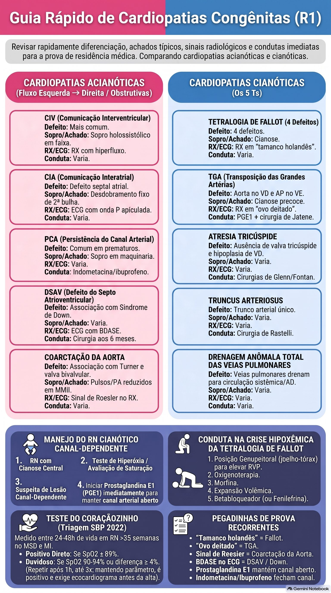

O raciocínio em 3 perguntas
Coração normal: lado direito venoso (azul), lado esquerdo oxigenado (vermelho), sem comunicação entre eles.
Oxigenado
Venoso
Misturado
Onde está o defeito
- Tem cianose? Shunt E→D (ou obstrução) = acianótica. Sangue venoso chegando à aorta (shunt D→E ou mistura) = cianótica.
- Como está o fluxo pulmonar no RX? Hiperfluxo (trama vascular aumentada) ou hipofluxo (campos “limpos”, escuros).
- Depende do canal arterial? Se sim: PGE1 já, antes do eco.
Por que a CIV grande “aparece” com ~2 meses? A resistência vascular pulmonar (RVP) cai nas primeiras semanas. Quanto menor a RVP, maior o shunt E→D, e vem a ICC (taquipneia, sudorese às mamadas, baixo ganho de peso).
Hiperfluxo × hipofluxo pulmonar
| Hiperfluxo | Hipofluxo |
|---|
| Acianóticas | CIV, CIA, PCA, DSAV | (fluxo normal) obstrutivas: coarctação, estenose pulmonar/aórtica |
| Cianóticas | TGA, truncus, DATVP | Fallot, atresia tricúspide, atresia pulmonar, Ebstein |
Síndrome de Eisenmenger
Shunt E→D grande e prolongado (CIV, PCA, DSAV) leva a hiperfluxo crônico, remodelamento arteriolar e hipertensão pulmonar irreversível. Quando a pressão pulmonar supera a sistêmica, o shunt inverte (D→E) e aparece cianose tardia. A partir daí não se fecha mais o defeito. Por isso CIV grande e DSAV são operados cedo.
Associações que caem
| Síndrome / contexto | Cardiopatia |
|---|
| Down (T21) | DSAV (a mais característica), CIV |
| Turner (45,X) | Coarctação, valva aórtica bicúspide |
| DiGeorge (22q11) | Truncus, interrupção do arco, Fallot |
| Rubéola congênita | PCA, estenose de ramos pulmonares |
| Filho de mãe diabética | TGA, hipertrofia septal assimétrica |
| Williams | Estenose aórtica supravalvar |
| Noonan | Estenose pulmonar (valva displásica) |
| Holt-Oram | CIA + anomalias de membros superiores |
| Lítio na gestação | Ebstein |
Acianóticas: shunt E→D ou obstrução
Buraco no septo interventricular: o VE (pressão alta) joga sangue para o VD e daí para o pulmão (hiperfluxo).
CIV — Comunicação interventricular
- Defeito
- Orifício no septo interventricular (perimembranoso é o mais comum). Cardiopatia congênita mais comum (fora a aorta bicúspide).
- Fisiopatologia
- Shunt E→D, hiperfluxo pulmonar, sobrecarga de volume de AE e VE.
- Exame
- Sopro holossistólico, rude, em borda esternal esquerda baixa (3º–4º EIE), com frêmito. CIV pequena = sopro mais alto (“muito barulho para pouca CIV”).
- RX / ECG
- Cardiomegalia + hiperfluxo · ECG com SVE ou biventricular.
- Conduta
- Pequena (muscular): observar, a maioria fecha sozinha. Grande com ICC: furosemida ± IECA e cirurgia se ICC refratária, falha de crescimento ou hipertensão pulmonar (evitar Eisenmenger).
Pegadinha: sintomas por volta de 4–8 semanas, quando cai a RVP, e não ao nascer.
Buraco no septo interatrial: AE → AD, com sobrecarga de volume das câmaras direitas.
CIA — Comunicação interatrial
- Defeito
- Orifício no septo interatrial. Ostium secundum é o mais comum. Ostium primum faz parte do espectro do DSAV.
- Fisiopatologia
- Shunt E→D de baixa pressão. Costuma ser assintomática na infância.
- Exame
- B2 com desdobramento amplo e fixo + sopro sistólico ejetivo em foco pulmonar (hiperfluxo pela valva pulmonar, e não pelo defeito) ± ruflar diastólico tricúspide.
- RX / ECG
- Aumento de AD/VD + hiperfluxo · ECG: BRD incompleto + eixo desviado para a direita (OS). Eixo para a esquerda sugere ostium primum.
- Conduta
- Defeitos pequenos podem fechar sozinhos. Se houver repercussão (aumento de câmaras direitas), fechamento eletivo na idade pré-escolar, percutâneo se ostium secundum.
Pegadinha: o sopro não é gerado pela CIA, e sim pelo hiperfluxo na valva pulmonar.
O canal arterial (que deveria fechar) continua ligando aorta e artéria pulmonar: Ao → AP na sístole e na diástole.
PCA — Persistência do canal arterial
- Defeito
- Canal arterial patente após o período de fechamento esperado. Comum em prematuros e na rubéola congênita.
- Fisiopatologia
- Shunt Ao→AP contínuo, hiperfluxo pulmonar e roubo diastólico sistêmico.
- Exame
- Sopro contínuo em “maquinaria”, infraclavicular esquerdo · pulsos amplos, PA divergente (diastólica baixa).
- RX / ECG
- Hiperfluxo, aumento de AE/VE · ECG com SVE se grande.
- Conduta
- Prematuro com repercussão: ibuprofeno, indometacina ou paracetamol. RN a termo: AINE não funciona, o fechamento é percutâneo ou cirúrgico.
Pegadinha: PGE1 mantém o canal aberto; AINE fecha. Na prova, AINE é para PCA do prematuro.
Falha no “centro” do coração: CIA baixa + CIV alta + uma única valva AV comum.
DSAV — Defeito do septo atrioventricular
- Defeito
- Defeito dos coxins endocárdicos: CIA ostium primum + CIV de via de entrada + valva AV única (forma total).
- Associação
- Síndrome de Down (a cardiopatia mais característica da T21).
- Clínica
- ICC precoce, hiperfluxo importante e hipertensão pulmonar precoce.
- RX / ECG
- Cardiomegalia + hiperfluxo · ECG: eixo desviado para a esquerda (superior), padrão de BDAS.
- Conduta
- Controle da ICC e correção cirúrgica por volta de 3–6 meses, antes da hipertensão pulmonar fixa.
Pegadinha: Down + eixo para a esquerda (BDAS) = DSAV.
Estreitamento da aorta descendente perto do canal: sobra pressão para cima (MMSS) e falta para baixo (MMII).
Coarctação da aorta
- Defeito
- Estreitamento da aorta, em geral justaductal (após a subclávia esquerda). Associa-se a Turner e a valva aórtica bicúspide.
- Exame
- Pulsos femorais diminuídos ou atrasados · PA MMSS > MMII · sopro sistólico interescapular.
- RX
- Sinal do 3 (aorta) e sinal de Roesler (corrosão costal pelas colaterais intercostais), achados de criança maior, não do RN.
- Neonatal crítica
- Fluxo sistêmico canal-dependente: choque quando o canal fecha → PGE1.
- Conduta
- Correção cirúrgica (RN/lactente) ou angioplastia ± stent (criança maior).
Pegadinha: criança com HAS → palpar femorais e medir PA nos quatro membros.
Cianóticas: os 5 Ts
Tetralogia · Transposição · Tricúspide (atresia) · Truncus · Total (drenagem anômala das veias pulmonares).
① CIV · ② aorta cavalgando o septo · ③ estenose pulmonar (infundibular) · ④ hipertrofia de VD. O sangue venoso do VD sai pela aorta.
Tetralogia de Fallot
- Defeito
- CIV + dextroposição (cavalgamento) da aorta + estenose pulmonar infundibular + HVD. Cianótica mais comum após o período neonatal.
- Fisiopatologia
- Quanto maior a obstrução pulmonar, maior o shunt D→E e maior a cianose.
- Exame
- Cianose progressiva · sopro sistólico ejetivo em BEE alta (da estenose pulmonar, não da CIV) · posição de cócoras (squatting) espontânea.
- RX / ECG
- Coração em bota (“tamanco holandês”): ápice elevado + concavidade da AP · hipofluxo · ECG com SVD e eixo à direita.
- Conduta
- Correção total eletiva no 1º ano (geralmente 3–6 meses). Blalock-Taussig (shunt sistêmico-pulmonar) como paliativo se necessário.
Pegadinha: na crise hipoxêmica o sopro diminui ou some (menos sangue passa pela via pulmonar).
Artérias trocadas: a aorta sai do VD e a AP sai do VE. Ficam dois circuitos em paralelo, e só se sobrevive se houver mistura (CIA, CIV ou PCA).
TGA — Transposição das grandes artérias
- Defeito
- Aorta sai do VD e AP sai do VE. É a cianótica mais comum no período neonatal. Mais em meninos e em filhos de mãe diabética.
- Clínica
- Cianose intensa nas primeiras horas, muitas vezes sem sopro. Teste de hiperóxia: a PaO₂ não sobe.
- RX
- “Ovo deitado no fio” (ovo de lado): mediastino superior estreito + hiperfluxo.
- Conduta
- PGE1 → atriosseptostomia de Rashkind se a mistura for insuficiente → cirurgia de Jatene (switch arterial) nas primeiras semanas de vida.
Pegadinha: RN muito cianótico, sem desconforto respiratório e sem sopro → TGA.
Não existe valva tricúspide (✕). O sangue do AD é obrigado a passar pela CIA para o AE, mistura e volta ao VD pequeno pela CIV.
Atresia tricúspide
- Defeito
- Ausência da valva tricúspide + VD hipoplásico. Depende de CIA (obrigatória) e, em geral, de CIV ou PCA para chegar sangue ao pulmão.
- Clínica
- Cianose neonatal. Na maioria das vezes há hipofluxo pulmonar.
- RX / ECG
- Hipofluxo · ECG: eixo desviado para a ESQUERDA + SVE.
- Conduta
- Fisiologia univentricular: Blalock-Taussig se canal-dependente → Glenn (~4–6 meses) → Fontan (~2–4 anos).
Pegadinha: cianótica com eixo à esquerda = atresia tricúspide (no Fallot o eixo é para a direita).
Um único tronco arterial sai dos dois ventrículos, por cima de uma CIV, e dele nascem aorta e artérias pulmonares. Tudo misturado.
Truncus arteriosus
- Defeito
- Vaso único (com valva truncal) originando circulação sistêmica, pulmonar e coronária, sempre com CIV.
- Associação
- DiGeorge (22q11): hipocalcemia, timo ausente.
- Clínica
- Cianose leve + hiperfluxo e ICC precoce · pulsos amplos.
- RX
- Cardiomegalia + hiperfluxo ± arco aórtico à direita.
- Conduta
- Correção cirúrgica precoce (Rastelli: tubo VD-AP + fechamento da CIV).
Pegadinha: cianose + ICC + hipocalcemia → truncus com DiGeorge.
As veias pulmonares não chegam ao AE: sobem por uma veia vertical e drenam na VCS → AD (forma supracardíaca). O AE só recebe sangue pela CIA.
DATVP — Drenagem anômala total das veias pulmonares
- Defeito
- Todas as veias pulmonares drenam para a circulação venosa sistêmica. Tipos: supracardíaca (a mais comum), cardíaca e infracardíaca. CIA obrigatória.
- Clínica
- Cianose + hiperfluxo. A forma obstrutiva (infracardíaca) é emergência, com edema pulmonar grave.
- RX
- Supracardíaca: “boneco de neve” (figura em 8). Obstrutiva: coração pequeno + padrão de edema pulmonar.
- Conduta
- Cirúrgica, de emergência se obstruída. PGE1 não resolve.
Pegadinha: RN cianótico com RX de “edema pulmonar” e coração pequeno → DATVP obstrutiva.
Sinais de RX: resumo
| Imagem | Cardiopatia |
|---|
| Coração em bota / tamanco holandês | Tetralogia de Fallot |
| Ovo deitado no fio (ovo de lado) | TGA |
| Boneco de neve / figura em 8 | DATVP supracardíaca |
| Sinal do 3 + Roesler (corrosão costal) | Coarctação da aorta (criança maior) |
| Cardiomegalia “parede a parede” (coração em moringa) | Ebstein |
RN cianótico: é coração ou pulmão?
RN com cianose central
↓
Teste de hiperóxia: O₂ a 100% por ~10 min → gasometria (pré-ductal)
↓
PaO₂ > 150 mmHg
→ provável doença pulmonar
PaO₂ < 100 mmHg (muitas vezes < 50)
→ cardiopatia cianótica
↓
Suspeita de lesão canal-dependente → iniciar PGE1 sem esperar o eco
↓
Ecocardiograma + contato com cardiologia pediátrica / transferência
Quem depende do canal arterial?
| Fluxo que depende do canal | Exemplos | Quadro quando o canal fecha |
|---|
| Pulmonar | Atresia pulmonar, Fallot extremo, atresia tricúspide com EP, Ebstein grave | Cianose intensa, hipoxemia |
| Sistêmico | Hipoplasia do coração esquerdo, coarctação crítica, interrupção do arco, estenose aórtica crítica | Choque, pulsos fracos, acidose (pode simular sepse) |
| Mistura | TGA | Cianose grave |
Prostaglandina E1 (alprostadil)
- Mantém ou reabre o canal arterial.
- Dose usual: 0,01–0,1 mcg/kg/min em infusão contínua, com ajuste para a menor dose eficaz (seguir o protocolo local).
- Efeitos adversos que caem: apneia (deixar via aérea preparada), febre, hipotensão, rubor.
RN “séptico” em choque, com pulsos femorais fracos, na 1ª–2ª semana de vida: pense em lesão obstrutiva esquerda canal-dependente e inicie PGE1.
Crise hipoxêmica (crise de cianose) no Fallot
A lógica é aumentar a resistência vascular SISTÊMICA e relaxar o infundíbulo. Assim, o sangue do VD é empurrado para o pulmão em vez de sair pela aorta através da CIV.
- Posição genupeitoral (joelhos no peito) → ↑ RVS. É o mesmo princípio do “squatting”.
- Acalmar a criança (colo da mãe) + O₂.
- Morfina → reduz a hiperpneia e o espasmo infundibular.
- Expansão volêmica (SF).
- Bicarbonato se houver acidose metabólica.
- Betabloqueador (propranolol/esmolol) → relaxa o infundíbulo · fenilefrina → ↑ RVS.
- Refratária: sedação/IOT e cirurgia de urgência (shunt ou correção).
Evitar inotrópicos (dobutamina, adrenalina): aumentam a contratilidade e pioram o espasmo infundibular.
Gatilhos típicos: choro, mamada, evacuação, desidratação e febre, geralmente pela manhã, entre 2 e 6 meses.
Teste do coraçãozinho (oximetria de pulso) — SBP 2022
- Quem: RN com IG > 34 semanas, aparentemente saudáveis.
- Quando: entre 24 e 48 h de vida, antes da alta.
- Onde: membro superior direito (pré-ductal) e um dos membros inferiores (pós-ductal).
- Objetivo: triagem de cardiopatia congênita crítica (canal-dependente).
Oximetria em MSD e MI
↓
NEGATIVO
SpO₂ ≥ 95% nos dois
e diferença ≤ 3%
→ rotina
DUVIDOSO
SpO₂ 90–94%
ou diferença ≥ 4%
→ repetir em 1 h, até 2 vezes
POSITIVO
SpO₂ ≤ 89%
em qualquer membro
→ ecocardiograma
↓
Duvidoso que persiste na 3ª medida = positivo → não dar alta e fazer ecocardiograma
Teste negativo não exclui cardiopatia (CIV, CIA e coarctação podem passar). Exame físico completo e palpação de pulsos femorais continuam obrigatórios.
Pegadinhas de prova
Cardiopatia congênita mais comum?
CIV (fora a valva aórtica bicúspide).
Cianótica mais comum no período neonatal × após o 1º ano?
Neonatal: TGA. Depois: Tetralogia de Fallot.
Desdobramento fixo de B2?
CIA.
Sopro contínuo em maquinaria + pulsos amplos?
PCA.
Down + ECG com eixo para a esquerda?
DSAV.
Cianótica com eixo para a esquerda e SVE?
Atresia tricúspide.
PA de MMSS maior que de MMII + Turner?
Coarctação da aorta.
Na crise hipoxêmica, o sopro do Fallot aumenta ou diminui?
Diminui: menos sangue passa pela via de saída pulmonar.
Qual efeito colateral da PGE1 exige atenção imediata?
Apneia.
PCA no RN a termo: indometacina?
Não. AINE funciona no prematuro; no termo o fechamento é percutâneo ou cirúrgico.
Cirurgia de Jatene, Rastelli, Glenn/Fontan?
Jatene: TGA (switch arterial). Rastelli: truncus. Glenn → Fontan: fisiologia univentricular (atresia tricúspide, hipoplasia de VE).
RN “séptico” com pulsos femorais ausentes na 1ª semana?
Lesão obstrutiva esquerda canal-dependente (coarctação crítica, hipoplasia de VE) → PGE1.
Infográfico original (NotebookLM)
O infográfico gerado tem alguns erros. Esta página já está corrigida; vale conferir a tabela abaixo antes de usar a imagem para revisar.
| Onde | No infográfico | Correto |
|---|
| Teste do coraçãozinho | Positivo se SpO₂ “± 89%” | Positivo se SpO₂ ≤ 89% |
| Teste do coraçãozinho | RN > 35 semanas | RN > 34 semanas |
| Crise hipoxêmica | Genupeitoral “para elevar RVP” | Eleva a RVS (sistêmica) |
| Coarctação | “Valva bivalvular” | Valva aórtica bicúspide |
| Coarctação | “Sinal de Reesier” | Sinal de Roesler (corrosão costal), em criança maior |
| CIA | ECG com onda P apiculada | BRD incompleto + eixo à direita |
